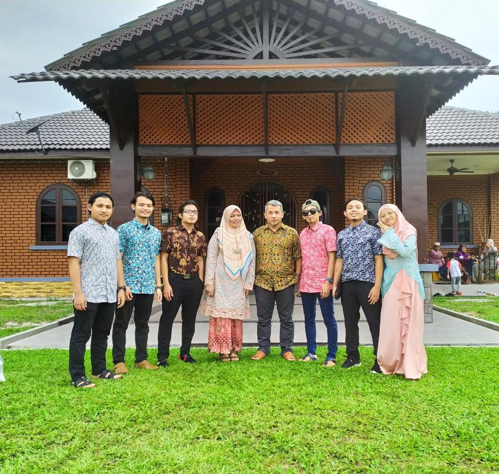
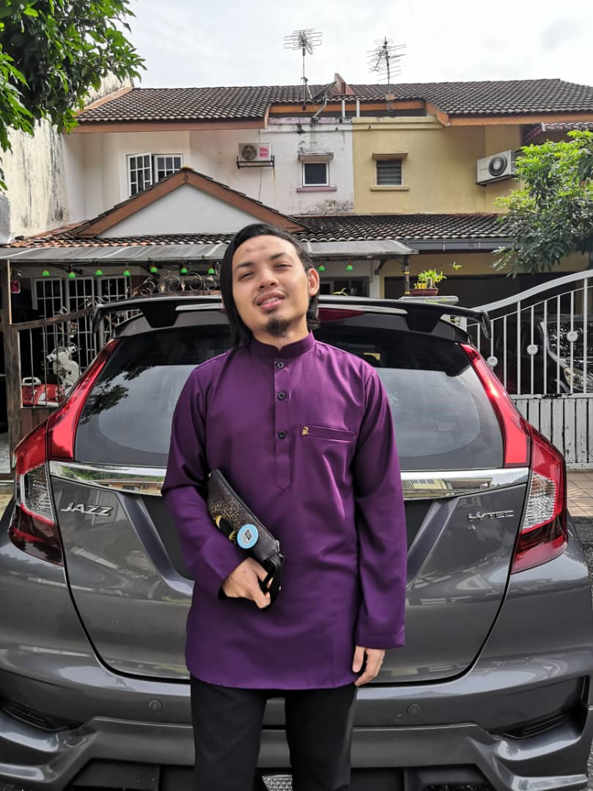
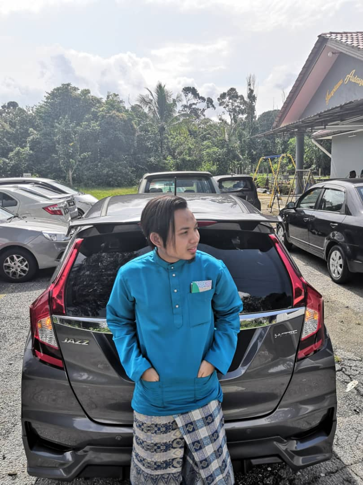
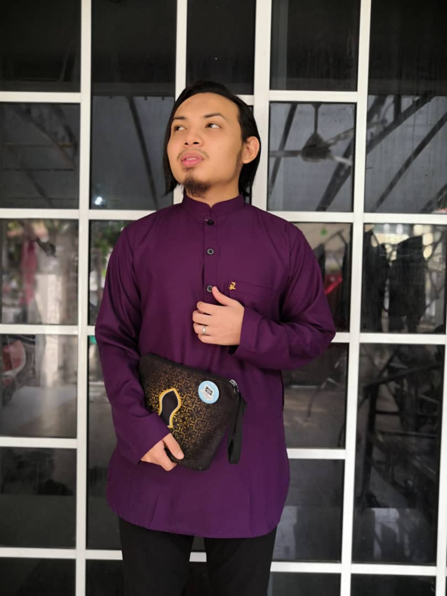

😁 Amier Haziq Bin Mohd Ramli 😁
 |
 |
Both pictures here is my happy family beraya together.Surely beraya together is one of the cherish and treasure moment of all times when we making time beraya with our beloved family.In those picture,that are my full family members which consist of my father,my mother,my first brother Umarul,my second brother Ashraf,my third brother Aqiel,next is me,and my two other sisters which is Haikal and Atiqah.Surely without one of them during Hari Raya is gonna be incomplete of our family.Alhamdulillah at that time we spent our time beraya together happily.
😄 This is myself 😄
|  |  |  |
My name is Amier Haziq and I am 21 years old and these three picture above is me berhari raya during MCO.Currently I'm on my last semester studying at UITM Rembau,but since we are under movement restricted order (MCO), so I could not go to campus and just study and do assignment at home instead.This is heartbreaking actually but as a student we have to always go through hard times like this.InsyaAllah we will succeed.